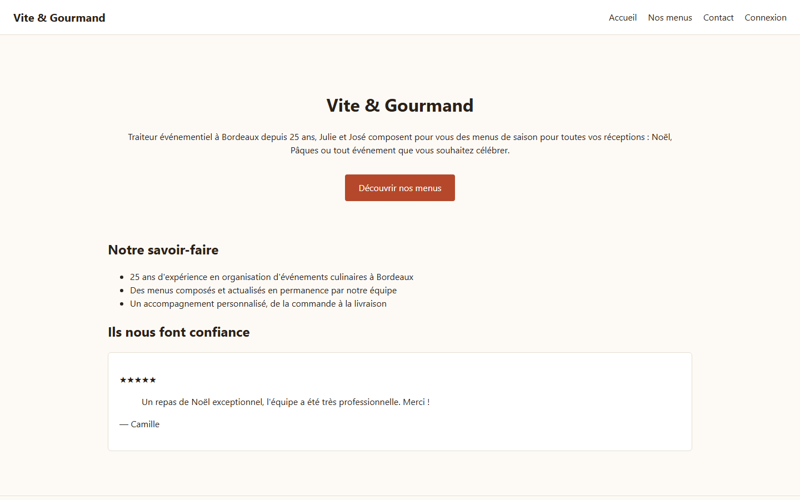
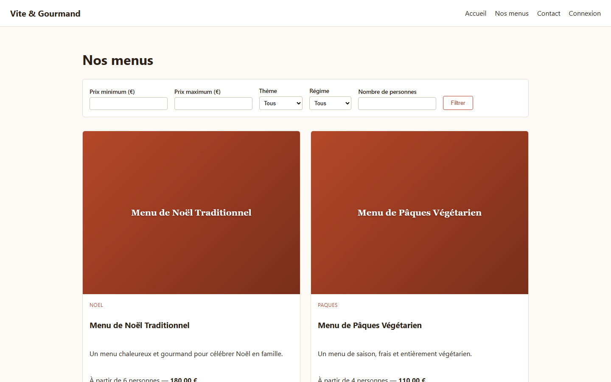
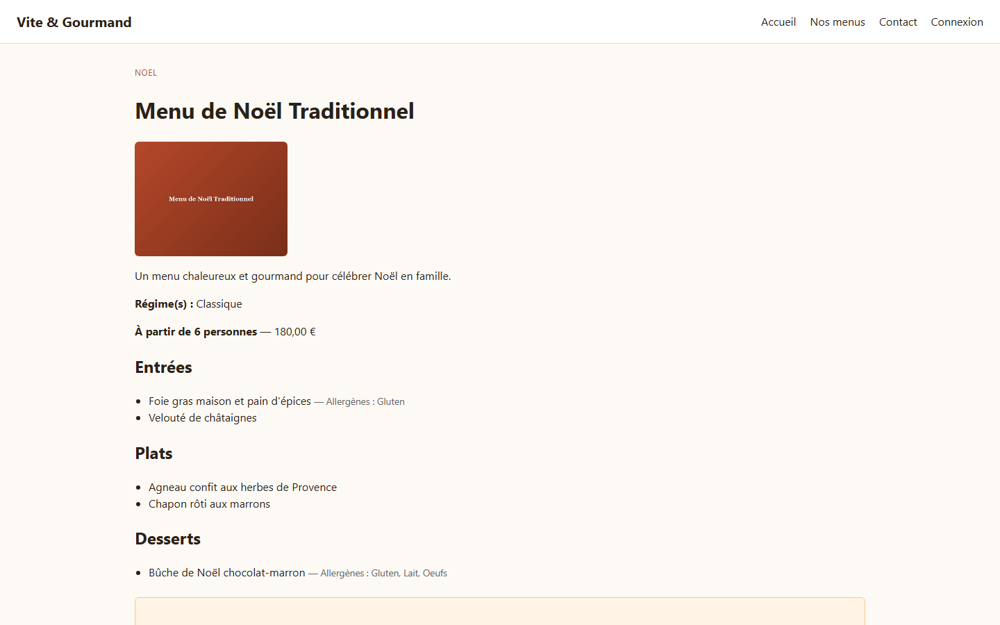
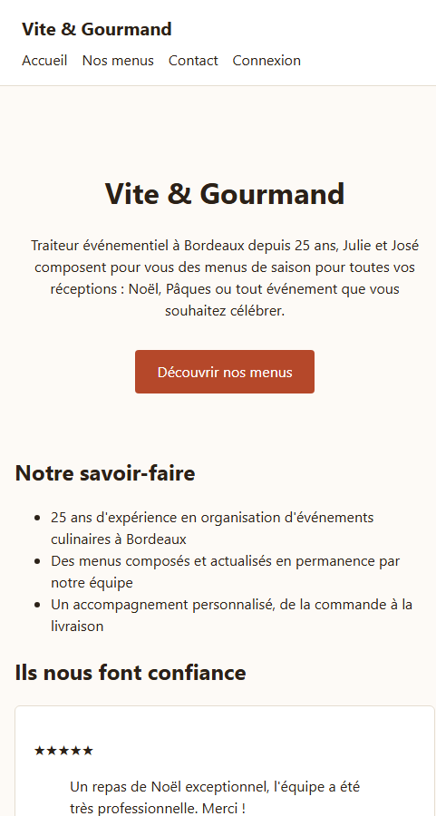
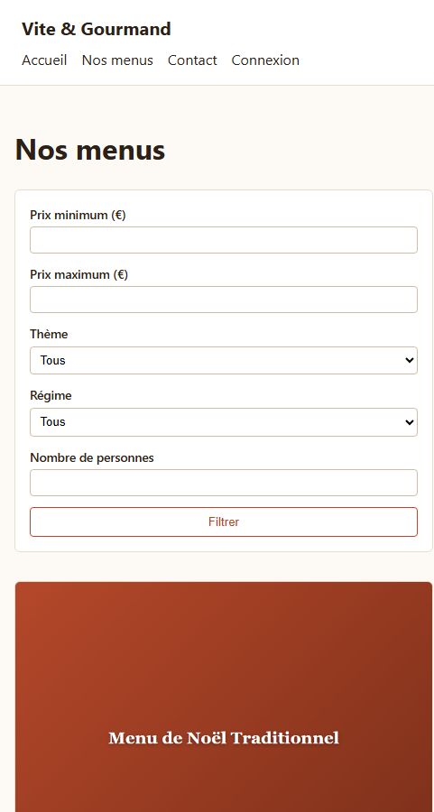
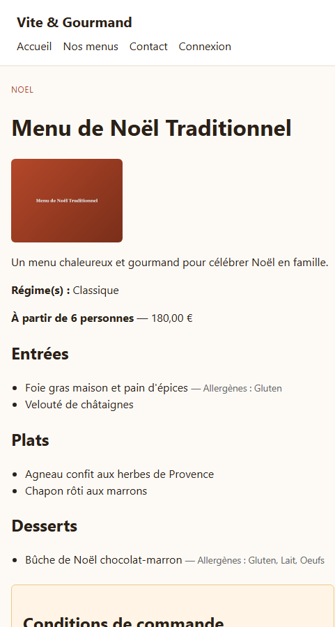

Charte graphique
Palette de couleurs, typographie et maquettes de l'application web
La palette s'inspire d'une ambiance chaleureuse et artisanale, cohérente avec l'univers d'un traiteur événementiel : une teinte terracotta comme couleur d'accent, sur un fond crème et un texte brun profond pour une bonne lisibilité.
Une police système unique est utilisée pour l'ensemble du site (aucun chargement de police externe requis : meilleures performances, cohérence multiplateforme immédiate).
Famille : system-ui, -apple-system, "Segoe UI", Roboto, sans-serif
Titre H1 — Vite & Gourmand
Titre H2 — Nos menus
Texte courant — Traiteur événementiel à Bordeaux depuis 25 ans.
Texte d'aide — 10 caractères minimum, une majuscule, un chiffre...
Boutons
Découvrir nos menus FiltrerCarte menu
Noël
Menu de Noël Traditionnel
À partir de 6 personnes — 180,00 €
Captures de l'application (résolution 1440 px)



Captures de l'application (résolution ~480 px, point de rupture mobile)


